Survey Results & Discussion (Enzo)
General Information
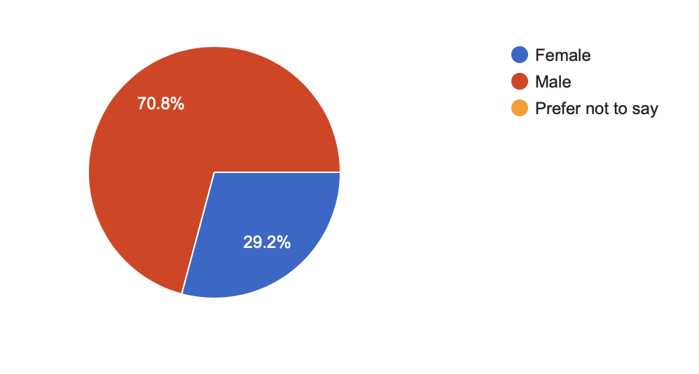
Figure 1: Gender Information
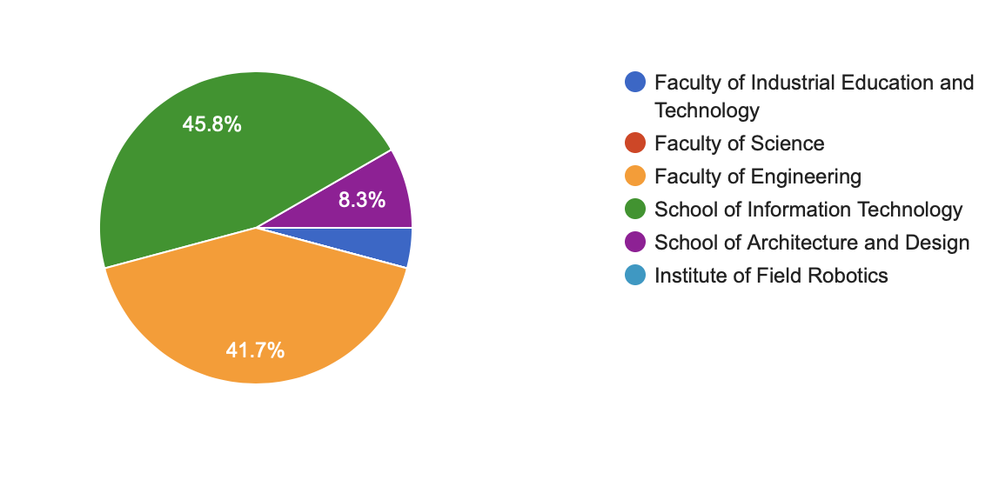
Figure 2: faculty Information
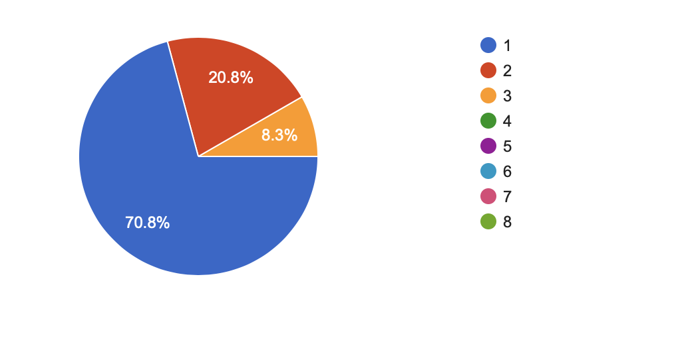
Figure 3: academic year Information
Questionnaire summary
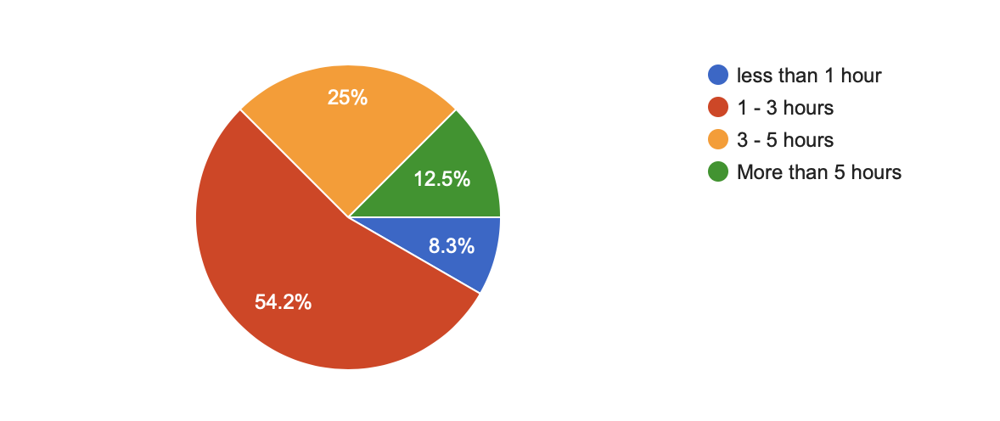
Figure 4: How many hours do you use YouTube per day?
After a calculation, the average of the time spends on YouTube by people is at least 3 hours, 1/8 of a day. So, YouTube is daily in the life of most people. It is interesting to know more about the use of YouTube as a learning platform with people who use it frequently during a time.
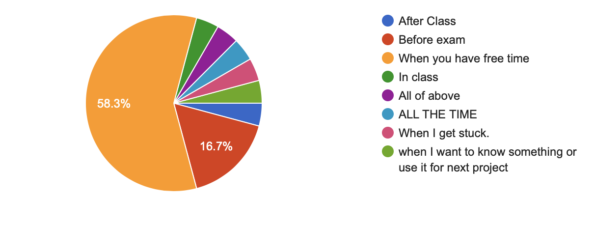
Figure 5: When do you watch YouTube to learn?
With this graph we can see that there are two types of person that use YouTube to learn. The first type, represented by the biggest part (“When you have free time”) use YouTube for their general knowledge, not for studies, so they watch videos when they have time. The second type is opposite of the first. People use YouTube for their studies, so they watch YouTube because they need to watch it to be better in school.
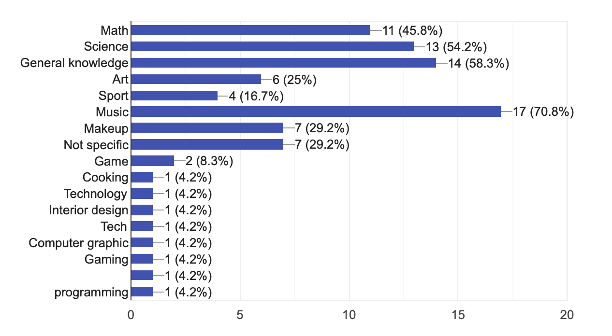
Figure 6: What topics do you watch on YouTube?
The most viewed topics are diversify, there are the scientific type of topics that appear the most, because the students are for the majority in a scientific faculty. But there are also many topics that are not scientific. For example: art, sport, general knowledge, music, makeup, gaming, cooking or interior design. The two-first type of topics (general knowledge and music) are not scientific topics. It means that it is not because students are in a scientific faculty that are not watch other type of topics.
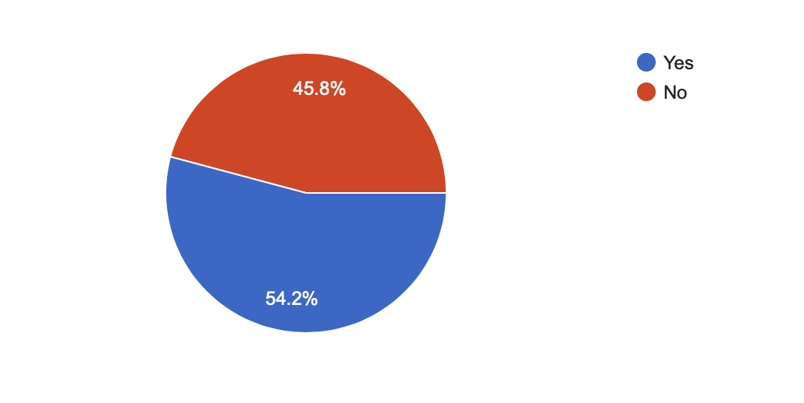
Figure 7: Do you use YouTube as your main learning platform?
More than half of people use YouTube as their main learning platform. So, we can say that YouTube is the biggest learning platform (in KMUTT).
Figure 8: Do you think YouTube can be used as online learning platform?
(5 being strongly agree)
The biggest learning platform used by the students of KMUTT is YouTube, so it is normal that they think that it can be used as online learning platform.
Figure 9: Do you think learning with YouTube can be more effective than in classroom?
(5 being strongly agree)
The most people ask “Yes”, globally, YouTube can be more effective than classrooms. But it is not absolutely true, sometimes, it is to learn in classrooms than with YouTube.
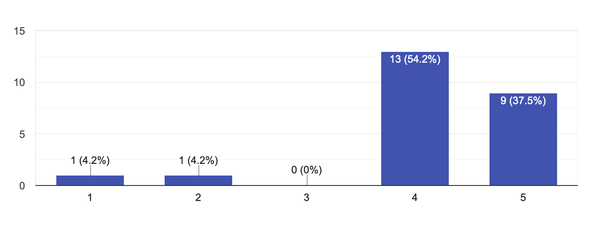
Figure 10: Does YouTube affect your learning and academic results?
(5 being strongly agree)
The result of this graph is clear, people think that for the majority, videos affect their learning and academic results. So, YouTube’s videos have a real impact in the studies.
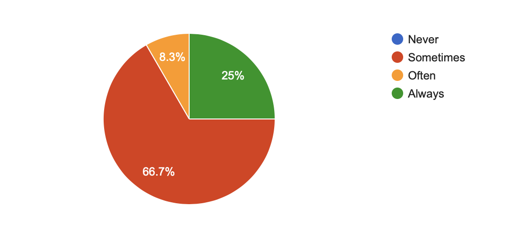
Figure 11: Do you advise your friends to learn on YouTube?
This graph allows us to see that people think that they advise their friends for some topics, but there are some topics that are not good to see.
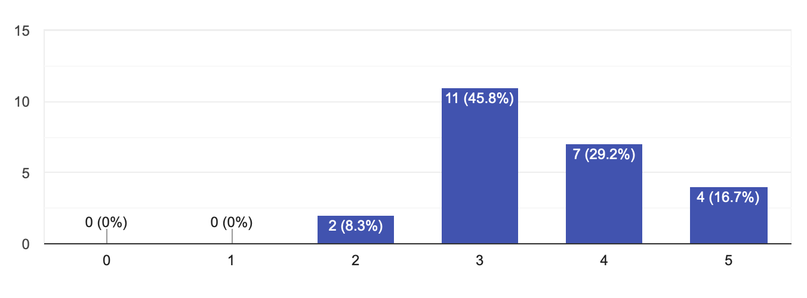
Figure 12: Are you sure about quality of information that you see on YouTube?
(5 being strongly agree)
The most people vote that the quality of videos is good, but it is “only” 3/5. It seems that the most videos that they watch are in quality, but they saw also some videos with a bad quality. Mainly, the videos on YouTube are in a good quality.
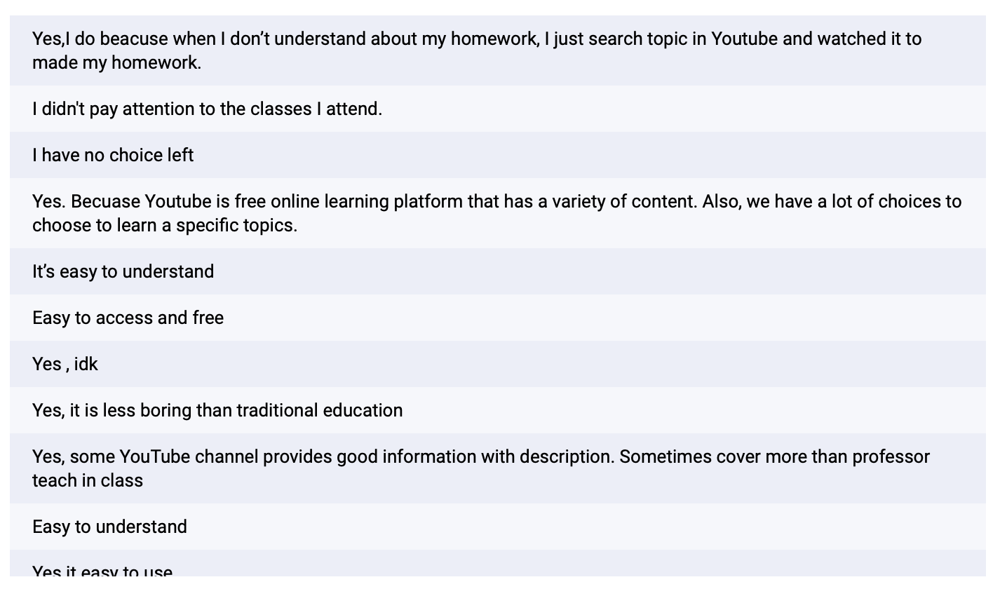
Figure 13: Do you watch YouTube's video to learn? Why?
With this last question, YouTube looks like a good learning platform. The reasons that appears the most are:
- Ease to use and understand: To find videos that talk about the subject that we want to know more on YouTube, we just must do a search. The firsts videos that appear are generally the bests, so the quality is good, and it is easier to understand the content.
- Free: Anybody can watch a video to learn something, even without money.
- Variety and quantity: Everyone or most people that want to share a video to help people to learn something freely upload their videos on YouTube, so now there are 1460 billion of videos upload each year. In this big quantity of videos, there are some bad videos, but there are some very good videos. The firsts that appears after a search are the bests, so the quality is important on YouTube.